철도신호기사 (2022-04-24 기출문제)
1과목: 전자공학
1. 다음 회로의 명칭으로 옳은 것은? (단, R = R'이고 다이오드는 이상적이라고 가정한다.)
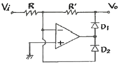
- 발진회로
- 클램프회로
- 전파정류기
- 반파정류기
(정답률: 알수없음)

2. 다음 회로에서 스위치 S를 10초 동안 on하고 40초 동안 off한 동작을 지속적으로 반복하면 저항 R의 양단에 발생하는 전압파형의 duty cycle은 얼마인가?
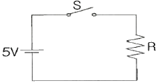
- 0.1
- 0.2
- 0.25
- 1
(정답률: 알수없음)
3. 정논리에서 그림과 같은 게이트는? (단, A와 B는 입력, C는 출력이다.)
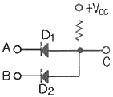
- NOR 게이트
- OR 게이트
- NAND 게이트
- AND 게이트
(정답률: 알수없음)
4. 어떤 증폭기에서 입력전압이 5mV이고 출력전압이 2V 일 경우 이 증폭기의 전압 증폭도를 dB로 환산하면 약 몇 dB 인가?
- 28
- 40
- 52
- 66
(정답률: 알수없음)
5. 다음 중 발진회로를 이용하지 않는 것은?
- 동기 검파
- 다이오드 검파
- 링 변조
- 헤테로다인 검파
(정답률: 알수없음)
6. 다음 이상 발진기의 발진주파수는 약 몇 kHz 인가? (단, R = 4kΩ, C = 0.01μF)
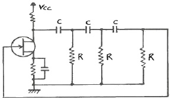
- 1.624
- 2.316
- 3.423
- 4.278
(정답률: 알수없음)
7. 진폭변조방식과 위상변조방식을 결합한 변조방식은?
- ASK
- FSK
- PSK
- QAM
(정답률: 알수없음)
8. 전원회로에서 전원전압을 일정하게 유지하기 위하여 사용되는 다이오드는?
- 포토 다이오드
- 터널 다이오드
- 제너 다이오드
- 바랙터 다이오드
(정답률: 알수없음)
9. 다음 회로의 명칭으로 옳은 것은?
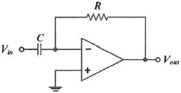
- 이상기
- 적분기
- 미분기
- 가산기
(정답률: 알수없음)
10. 연산증폭기의 내부 구성회로 중 Push-Pull 전력 증폭회로에서 크로스오버 일그러짐을 방지하기 위해 사용되는 소자로 가장 적절한 것은?
- 저항
- 콘덴서
- 다이오드
- 코일
(정답률: 알수없음)
11. 다음 중 보수를 이용한 감산회로에 대한 설명으로 옳은 것은?
- 감수의 보수를 이용하여 감산기로만 뺄셈을 하는 회로
- 피감수의 보수를 이용하여 감산기로만 뺄셈을 하는 회로
- 감수의 보수를 이용하여 가산기로만 뺄셈을 하는 회로
- 피감수의 보수를 이용하여 가산기로만 뺄셈을 하는 회로
(정답률: 알수없음)
12. 다음 중 슈미트 트리거(Schmitt trigger)회로의 응용이 아닌 것은?
- 구형파회로
- 증폭회로
- 쌍안정회로
- 전압비교회로
(정답률: 알수없음)
13. 다음 중 사인파의 파형률은?
- 1.111
- 1.155
- 1.414
- 1.571
(정답률: 알수없음)
14. FM변조방식에서 주파수의 높은 대역을 강조하여 S/N비가 저하되는 것을 방지하기 위한 회로는?
- de-emphasis
- AFC
- AVC
- pre-emphasis
(정답률: 알수없음)
15. NPN 트랜지스터가 증폭기로 동작하기 위한 베이스-이미터 접합부(JBE) 및 베이스-컬렉터 접합부(JBC)의 바이어스 전압 방향으로 옳은 것은?
- JBE : 순방향, JBC : 역방향
- JBE : 순방향, JBC : 순방향
- JBE : 역방향, JBC : 순방향
- JBE : 역방향, JBC : 역방향
(정답률: 알수없음)
16. 다음 중 교류 전력제어에 사용되는 3단자 반도체 소자는?
- 제너 다이오드
- 터널 다이오드
- 트라이액
- 포토 트랜지스터
(정답률: 알수없음)
17. VC = 30ㆍcos(ωCt) 반송파를 VS = 20ㆍcos(pt)의 신호파로 진폭 변조했을 때 변조도는 약 몇 % 인가?
- 5
- 15
- 46
- 67
(정답률: 알수없음)
18. 트랜지스터의 증폭기 종류 중 입력과 출력의 위상은 역상이 나며, 전압이득이 큰 증폭회로 방식은?
- 이미터 폴로워
- 공통 이미터 증폭기
- 공통 컬렉터 증폭기
- 공통 베이스 증폭기
(정답률: 알수없음)
19. 다음 중 발진기를 증폭기와 비교하였을 때 가장 큰 차이점은?
- 입력신호가 불필요하다.
- 이득이 크다.
- 항상 출력이 같다.
- DC 공급전압이 불필요하다.
(정답률: 알수없음)
20. A, B, C 양의 논리입력에서 A＜B 이고, B＞C일 경우에만 출력 Y가 “1”이 되는 논리식은?
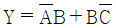
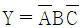
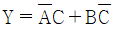
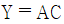
(정답률: 알수없음)
2과목: 회로이론 및 제어공학
21. 회로에서
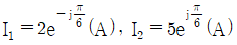
, I3= 5.0(A), Z3 = 1.0Ω 일 때 부하(Z1, Z2, Z3) 전체에 대한 복소 전력은 약 몇 VA 인가?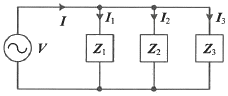
- 55.3 - j7.5
- 55.3 + j7.5
- 45 - j26
- 45 + j26
(정답률: 알수없음)
22. RL 직렬회로에서 시정수가 0.03s, 저항이 14.7Ω일 때 이 회로의 인덕턴스(mH)는?
- 441
- 362
- 17.6
- 2.53
(정답률: 알수없음)
23. 그림과 같은 T형 4단자 회로의 임피던스 파라미터 Z22는?
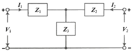
- Z3
- Z1 + Z2
- Z1 + Z3
- Z2 + Z3
(정답률: 알수없음)
24. 그림 (a)의 Y결선 회로를 그림 (b)의 △결선회로로 등가 변환했을 때 Rab, Rbc, Rca는 각각 몇 Ω 인가? (단, Ra = 2Ω, Rb = 3Ω, Rc = 4Ω)
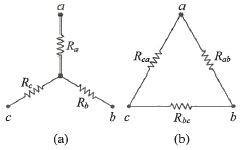
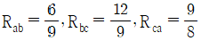
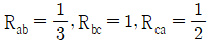
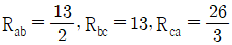
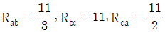
(정답률: 알수없음)
25. 상의 순서가 a-b-c인 불평형 3상 교류회로에서 각 상의 전류가 Ia = 7.28∠15.95°(A), Ib = 12.81∠-128.66°(A), Ic = 7.21∠123.69°(A) 일 때 역상분 전류는 약 몇 A 인가?
- 8.95∠-1.14°
- 8.95∠1.14°
- 2.51∠-96.55°
- 2.51∠96.55°
(정답률: 알수없음)
26. 회로에서 6Ω에 호르는 전류(A)는?
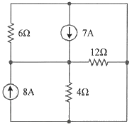
- 2.5
- 5
- 7.5
- 10
(정답률: 알수없음)
27.  는?
는?
- δ(t)+e-t(cos2t-sin2t)
- δ(t)+e-t(cos2t+2sin2t)
- δ(t)+e-t(cos2t-2sin2t)
- δ(t)+e-t(cos2t+sin2t)
(정답률: 알수없음)
28. 그림과 같은 부하에 선간전압이 Vab = 100∠30°(V)인 평형 3상 전압을 가했을 때 선전류 Ia(A)는?
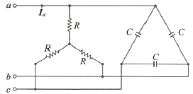
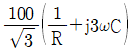
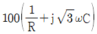
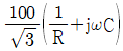
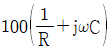
(정답률: 알수없음)
29. 분포정수로 표현된 선로의 단위 길이당 저항이 0.5Ω/km, 인덕턴스가 1μH/km, 커패시스턴스가 6μF/km일 때 일그러짐이 없는 조건(무왜형 조건)을 만족하기 위한 단위 길이당 컨덕턴스(℧/m)는?
- 1
- 2
- 3
- 4
(정답률: 알수없음)
30. 다음과 같은 비정현파 교류 전압 v(t)와 전류 i(t)에 의한 평균전력은 약 몇 W 인가?
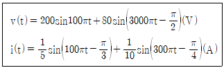
- 6.414
- 8.586
- 12.828
- 24.212
(정답률: 알수없음)
31. 그림의 신호흐름도를 미분방정식으로 표현한 것으로 옳은 것은? (단, 모든 초기 값은 0이다.)
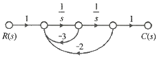
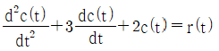
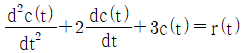
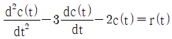
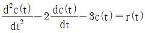
(정답률: 알수없음)
32. 전달함수가
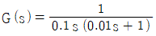
과 같은 제어시스템에서 ω = 0.1 rad/s 일 때의 이득(dB)과 위상각(°)은 약 얼마인가?- 40dB, -90°
- -40dB, 90°
- 40dB, -180°
- -40dB, -180
(정답률: 알수없음)
33.
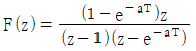
의 역 z 변환은?- t·e-at
- at·e-at
- 1+e-at
- 1-e-at
(정답률: 알수없음)
34. 다음의 개루프 전달함수에 대한 근궤적이 실수축에서 이탈하게 되는 분리점은 약 얼마인가?
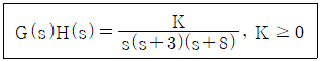
- -0.93
- -5.74
- -6.0
- -1.33
(정답률: 알수없음)
35. 제어시스템의 특성방정식이 s4+s3-3s2-s+2=0 와 같을 때, 이 특성방정식에서 s 평면의 오른쪽에 위치하는 근은 몇 개인가?
- 0
- 1
- 2
- 3
(정답률: 알수없음)
36. 다음 블록선도의 전달함수
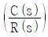
는?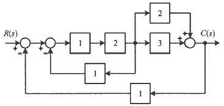
- 10/9
- 10/13
- 12/9
- 12/13
(정답률: 알수없음)
37. 제어시스템의 전달함수가
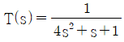
과 같이 표현될 때 이 시스템의 고유주파수(ωn(rad/s))와 감쇠율(ζ)은?- ωn=0.25, ζ=1.0
- ωn=0.5, ζ=0.25
- ωn=0.5, ζ=0.5
- ωn=1.0, ζ=0.5
(정답률: 알수없음)
38. 다음의 상태방정식으로 표현되는 시스템의 상태천이행렬은?


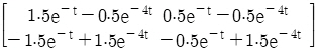
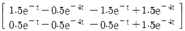
(정답률: 알수없음)
39. 기본 제어요소인 비례요소의 전달함수는? (단, K는 상수이다.)
- G(s) = K
- G(s) = Ks
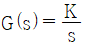
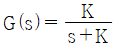
(정답률: 알수없음)
40. 다음의 논리식과 등가인 것은?
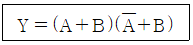
- Y = A
- Y = B
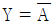
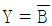
(정답률: 알수없음)
3과목: 신호기기
41. 장대형 전동 차단기의 기동전류(A)는 얼마 이하가 되도록 하여야 하는가?
- 40
- 50
- 60
- 70
(정답률: 알수없음)
42. 전동 차단기의 동작 전원이 정전되었을 때에는 차단기가 열린 위치에서 중력에 의해 약 몇 초 이내에 수평 위치까지 닫혀야 되는가?
- 5초
- 8초
- 10초
- 12초
(정답률: 알수없음)
43. 철도신호제어회로 중 시소 계전기가 사용되는 회로는?
- 신호 제어 회로
- 선별 계전기 회로
- 조사 계전기 회로
- 보류 및 접근 회로
(정답률: 알수없음)
44. 직류기에서 전기자 반작용을 방지하는 방법이 아닌 것은?
- 보상권선을 설치한다.
- 전기자전류를 증가시킨다.
- 보극을 설치한다.
- 계자기자력을 증가시킨다.
(정답률: 알수없음)
45. 60Hz, 슬립 3%, 회전수 1164rpm인 유도 전동기의 극수는?
- 2극
- 4극
- 6극
- 8극
(정답률: 알수없음)
46. 직류 분권전동기를 무부하로 운전하고 있을 때, 계자회로에 단선이 생긴 경우 발생하는 현상으로 옳은 것은?
- 역전한다.
- 즉시 정지한다.
- 무부하이므로 서서히 정지한다.
- 과속도로 되어 위험하다.
(정답률: 알수없음)
47. 자극수 4, 슬롯 수 40, 슬롯 내부 코일변수 4인 단중 중권 직류기의 정류자 편수는?
- 10
- 20
- 40
- 80
(정답률: 알수없음)
48. 3상유도 전동기의 특성 중 비례추이를 할 수 없는 것은?
- 토크
- 출력
- 1차 입력
- 2차 전류
(정답률: 알수없음)
49. 변압기의 부하가 증가할 때의 현상으로 틀린 것은?
- 동손이 증가한다.
- 철손이 증가한다.
- 온도가 상승한다.
- 여자 전류는 변함이 없다.
(정답률: 알수없음)
50. ATS 지상자 제어계전기의 접점저항은 몇 mΩ 이하이어야 하는가?
- 60
- 80
- 100
- 120
(정답률: 알수없음)
51. 건널목 고장감시장치에서 검지할 수 없는 것은?
- 건널목 경보종의 계속 경보
- 전동차단기 동작상태
- 건널목 전원회로의 저전압
- 건널목의 방향 표시등 상태
(정답률: 알수없음)
52. 3상 유도 전동기에서 2차 측 저항을 2배로 하면 최대 토크는 어떻게 변하는가?
- 2배 증가
- 1/2로 감소
- √2배 증가
- 변하지 않음
(정답률: 알수없음)
53. 다음 중 쌍방향성 3단자 사이리스터는?
- SCR
- TRIAC
- SSS
- SCS
(정답률: 알수없음)
54. 건널목 경보기에서 경보종의 타종수는 기당 매분 몇 회인가?
- 10~50회
- 60~90회
- 70~100회
- 100~110회
(정답률: 알수없음)
55. 전부하에서 동손이 80W, 철손이 40W인 변압기가 있다. 부하의 약 몇 % 일 때 최대 효율이 되는가?
- 50
- 60
- 70
- 80
(정답률: 알수없음)
56. 4극, 60Hz, 22KW인 3상 유도전동기가 있다. 전부하 슬립 4%로 운전할 때 토크(kg·m)는 약 얼마인가?
- 9.65
- 10.72
- 11.86
- 12.41
(정답률: 알수없음)
57. 전력용 반도체 소자 중 사이리스터에 속하지 않는 것은?
- SCR
- GTO
- Diode
- SSS
(정답률: 알수없음)
58. 단상 변압기의 1차 전압이 2200V, 1차 무부하 전류는 0.088A, 무부하 철손이 110W 라고 하면, 자화전류(A)는 약 얼마인가?
- 0.0624
- 0.0724
- 0.0824
- 0.0924
(정답률: 알수없음)
59. 60Hz의 변압기에 50Hz의 동일 전압을 가했을 때의 자속밀도는 60Hz일 때보다 어떻게 되는가?
- 5/6로 된다.
- 6/5로 된다.
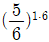
로 된다.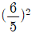
로 된다.
(정답률: 알수없음)
60. 120V, 전기자 전류 100A, 전기자 저항 0.2Ω인 분권전동기의 발생 동력(kW)은?
- 8
- 9
- 10
- 12
(정답률: 알수없음)
4과목: 신호공학
61. 신호의 현시방법으로 3위식 3현시에 속하지 않는 것은?
- 진행
- 주의
- 감속
- 정지
(정답률: 알수없음)
62. 다음 중 고속철도 전용선에 사용되는 선로전환기의 종류는?
- NS형
- NS-AM형
- 기계식
- MJ-81형
(정답률: 알수없음)
63. 열차자동정지장치(ATS)의 지상자 설치에 관한 설명으로 옳은 것은?
- 점제어식 지상자 설치거리는 해당신호기의 절연위치에서 바깥쪽으로 열차 제동거리의 1.5배 범위로 한다.
- 출발경보용은 해당신호기의 절연위치에서 바깥쪽으로 12m 이상으로 한다.
- 속도조사식 지상자는 해당신호기의 절연위치에서 바깥쪽으로 15m 이상으로 한다.
- 가드레일과의 간격 600mm 이상으로 한다.
(정답률: 알수없음)
64. 진로쇄정과 비교하여 진로구분쇄정의 이점으로 옳은 것은?
- 보안도를 향상시킨다.
- 역구내 운전 정리 작업의 효율을 증대시킨다.
- 시설비를 크게 절감할 수 있다.
- 열차의 안전운행을 도모할 수 있다.
(정답률: 알수없음)
65. 3현시 구간에서 폐색구간의 거리가 1200m, 열차의 길이가 100m, 신호 현시에 필요한 최소거리가 200m, 신호기가 주의신호에서 진행신호를 현시할 때까지의 시간이 1초라면 최소운전시격은 몇 초인가? (단, 열차의 속도는 90km/h 이다.)
- 100
- 109
- 113
- 119
(정답률: 알수없음)
66. 다음 중 신호기의 정위현시가 다른 것은?
- 유도신호기
- 입환신호기
- 엄호신호기
- 출발신호기
(정답률: 알수없음)
67. 다음 빈칸에 들어갈 알맞은 내용은?
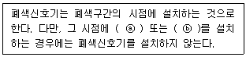
- ⓐ 장내신호기, ⓑ 출발신호기
- ⓐ 장내신호기, ⓑ 유도신호기
- ⓐ 유도신호기, ⓑ 원방신호기
- ⓐ 출발신호기, ⓑ 원방신호기
(정답률: 알수없음)
68. 전기연동장치의 전철제어회로에 관한 설명 중 틀린 것은?
- 전철제어계전기는 전철쇄정계전기의 무여자로 쇄정한다.
- 전철제어계전기는 전철쇄정계전기의 여자로 동작한다.
- 전철제어계전기는 전철쇄정계전기의 여자로 쇄정한다.
- 전철제어계전기는 유극이며 전철쇄정계전기는 무극이다.
(정답률: 알수없음)
69. 점제어식 열차자동정지장치(ATS)의 지상자에서 비상정지위치까지의 거리 계산식으로 옳은 것은? (단, 열차종별은 전동차이며 여유거리를 고려하지 않은 경우이다.)
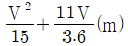
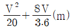
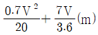
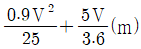
(정답률: 알수없음)
70. 열차자동방호장치(ATP)에서 선로변제어유니트와 발리스간 케이블 연결에 대한 설명으로 틀린 것은?
- 선로변제어유니트와 발리스는 전송케이블을 통하여 통신한다.
- 단심케이블은 케이블 선로를 경유하여 제어유니트에 연결된다.
- 발리스 케이블은 케이블 헷드를 경유하여 선로변제어유니트에 연결된다.
- 인필발리스를 설치하는 경우 신호계전기실내의 선로변제어유니트와 발리스 케이블 헷드간의 케이블 설치는 선로변제어유니트에서 가까운 발리스(메인, 인필) 케이블 헷드간에는 케이블 4회선을 설치하고 케이블 헷드간은 케이블 2회선을 설치한다.
(정답률: 알수없음)
71. 열차집중제어장치의 주요기능으로 거리가 먼 것은?
- 열차운행계획관리
- 수송수요예측관리
- 열차의 진로 자동제어
- 신호설비의 감시제어
(정답률: 알수없음)
72. 다음 중 궤도회로의 불평형률은? (UB : 불평형률(%), I1, I2 : 각 레일의 전류)
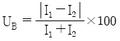
(정답률: 알수없음)
73. NS형 전기선로전환기의 제어 계전기에 사용되는 계전기는?
- 완동 계전기
- 완방 계전기
- 무극선조 계전기
- 자기유지 계전기
(정답률: 알수없음)
74. 단선구간에서 사용하는 대용폐색방식으로 복선구간의 통신식에 대한 수속을 하고 신중을 기하기 위하여 지도표를 발행하여 운행 열차의 기관사에게 휴대하도록 하는 방식은?
- 통신식
- 지도통신식
- 지도식
- 연동폐색식
(정답률: 알수없음)
75. 열차집중제어장치(CTC)의 운전모드에 관한 설명으로 틀린 것은?
- CTC의 운전모드는 로칼(Local) 모드와 관제모드로 구분된다.
- 시스템내의 감시가 가능한 모든 현장표시정보는 관제모드에서만 현장역의 LDTS를 통하여 실시간으로 관제실 통신서버로 접속된다.
- 시스템내의 어떤 역에 대한 제어 형식은 AUTO, CCM 및 로컬(Local) 제어 모드 중 하나의 모드가 선택되며, 이러한 운전모드는 역별로 각각 설정된다.
- 관제모드란 제어권한이 관제실에 있어 LDTS장치를 이용하여 현장역의 신호설비들을 중앙에서 원격제어하는 것을 말한다.
(정답률: 알수없음)
76. 선로전환기의 정·반위 결정법 중 옳은 것은?
- 본선과 측선의 경우 본선 방향이 반위
- 탈선 선로전환기는 탈선하는 방향이 반위
- 본선과 안전 측선의 경우 본선 방향이 정위
- 본선과 본선의 경우 주요한 방향이 정위
(정답률: 알수없음)
77. 임펄스 및 AF 궤도회로(무절연 AF궤도회로 제외)의 경우 궤도단락감도는 그 궤도회로를 통과하는 열차에 대하여 맑은 날 몇 Ω 이상이어야 하는가?
- 0.06
- 0.16
- 0.01
- 0.1
(정답률: 알수없음)
78. 전기연동장치에서 전기적 쇄정의 목적이 아닌 계전기는?
- TPR
- TLSR
- WLR
- NKR
(정답률: 알수없음)
79. 여자한 궤도 계전기가 230mV에서 낙하하였다. 궤도 계전기의 저항(Ω)은 약 얼마인가?(단, 여자 전류는 38mA, 낙하전압은 여자전압의 68% 이다.)
- 9
- 11
- 13
- 15
(정답률: 알수없음)
80. 신호설비에 안정된 전원을 공급하기 위한 신호용 배전반에 관한 설명으로 틀린 것은?
- 신호계전기실에서 현장까지 연결되는 케이블의 접지저항이 20kΩ 이하일 경우에는 자동으로 접지표시가 된다.
- 배전반 공급전원이 정전될 경우와 50% 이하일 경우에는 경보가 발생되어야 한다.
- 배전반의 상용전원이 정전되거나 93V 이하가 되면 0.1초 이내에 비상전원으로 자동으로 전환되고 상용전원이 회복되어 93% 이상전압이 상승되면 40초 후에 다시 상용전원으로 자동절환 된다.
- 배전반에서 신호기에 공급되는 신호기 등압용 전원은 주, 야간에 따라 등압을 조정할 수 있다.
(정답률: 알수없음)